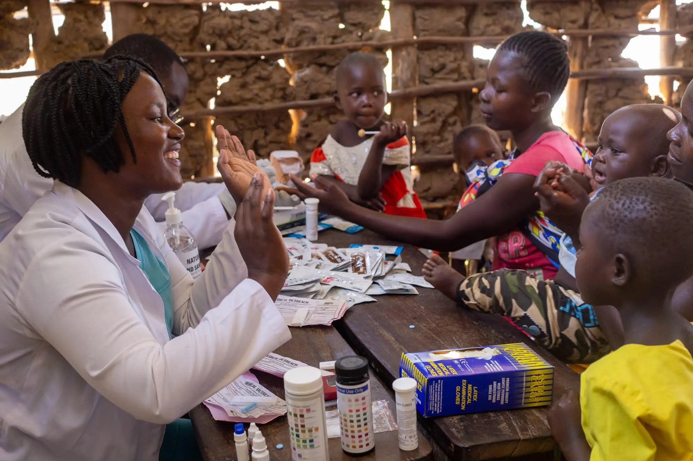

2024 IMPACT REPORT
Nissi Medical Outreach: Healing Hands, Hopeful Hearts
A Message of Stewardship
In 2024, Nissi Medical Outreach remained committed to the biblical mandate of caring for the "least of these." We recognize that medical care is often the first step in restoring dignity and hope to a community. This year, through the grace of God and the generosity of our partners, we expanded our footprint into some of the most remote regions of Uganda, ensuring that geography is never a barrier to life-saving healthcare.
 Medical Mission
Medical Mission
Restoring Hope in Northern Uganda: The Gulu Mission
In partnership with Next Generation Ministries and Dr. Rebecca Hunter, our team embarked on a four-day intensive medical mission to the remote villages of Gulu District. The post-conflict landscape of Northern Uganda still presents significant challenges to healthcare infrastructure, leaving many families days away from the nearest clinic.
Our team provided a comprehensive range of services, including general consultations, laboratory testing for malaria and typhoid, and basic surgical procedures. Beyond the medicine, our volunteers from Sozo Dream Foundation and Hummingbird Foundation engaged in community counseling and spiritual outreach, ensuring that we treated the whole person—body and soul.
Key Outcome: Over 1,200 residents received direct medical intervention, and 150 local leaders were trained in basic first aid and hygiene protocols.

Empowerment & EducationThe Namutumba Project: Dignity Through Menstrual Health
In the Namutumba District, we addressed a silent barrier to education: Period Poverty. Statistics show that adolescent girls in rural Uganda miss up to 20% of the school year due to a lack of sanitary supplies.
Led by our dedicated team members Sylivia and Betty, we conducted an interactive workshop focusing on the production of reusable sanitary pads. We don't just provide supplies; we provide skills. By teaching young women how to manufacture their own hygienic solutions from locally sourced flannel, we ensure the sustainability of the project.
Impact: 300 girls at Cetkana Primary School received menstrual hygiene kits and training, significantly reducing absenteeism and fostering a culture of health and openness.
 Community Health Camp
Community Health Camp
Gingo Village: Addressing the Non-Communicable Disease Crisis
Our outreach to Gingo Village in Mityana District revealed a staggering need for chronic disease management. In a single day, we served 459 citizens, many of whom were unaware they were living with high blood pressure or vision impairments.
Through our partnership with Live in Light Ministries, we distributed hundreds of pairs of prescription eyeglasses, instantly restoring the ability for elders to read Scripture and for workers to return to their trades. We also integrated HIV testing and dental care, providing a "one-stop" health sanctuary for the village.
The Result: 459 citizens screened; 120 pairs of eyeglasses distributed; 100% of patients received free medication and lifestyle counseling for hypertension and diabetes.
Partner With Us in 2025
The stories shared in this report are only possible because of partners like you. As we look toward 2025, our goal is to purchase a dedicated mobile clinic vehicle to reach even deeper into the "last-mile" communities of Uganda.
Ways to Give:
SCAN TO DONATE
Bank Transfer: [Your Bank Details Here]
Mobile Money: [Your Number Here]